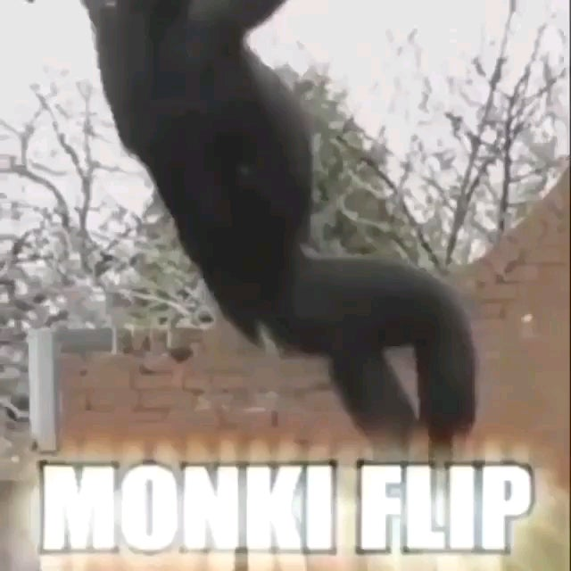

MONO DA TREMENDA VUELTA EN 4K
16546798125 reproducciones
 Iker Iturralde
Iker Iturralde
El legendario MONKEY FLIP está de vuelta, el origen y el motivo principal de esta página web está aqui con nosotros, UN MONO DANDO LA VUELTA.
Clique en cualquier parte del recuadro para ser dirigido a una ventana con el video.